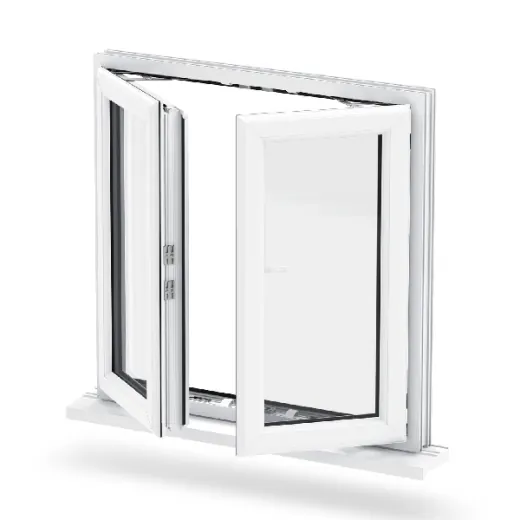
پنجره ویستابست
- جنس پروفیل
- یوپیویسی
مشاهدهٔ محصول
Vistabest


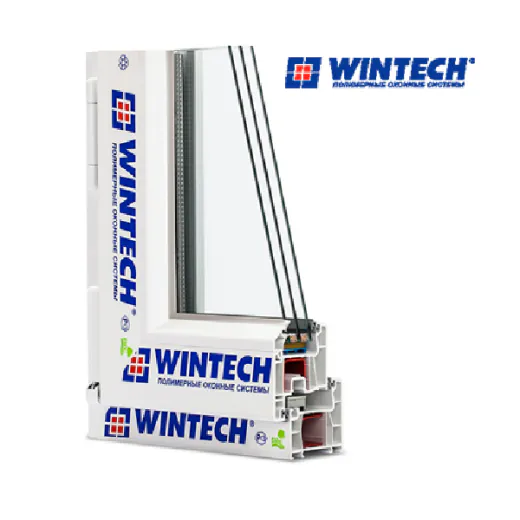
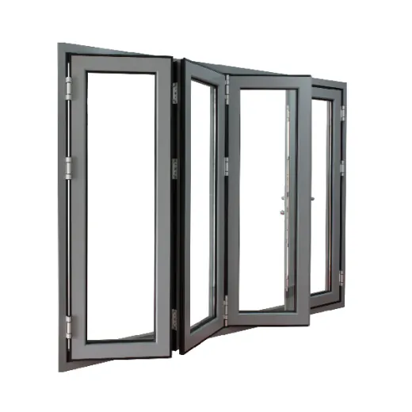
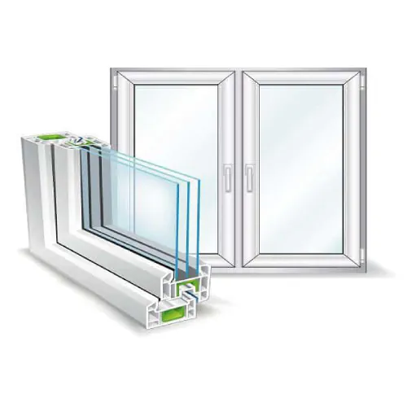
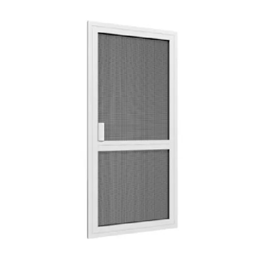
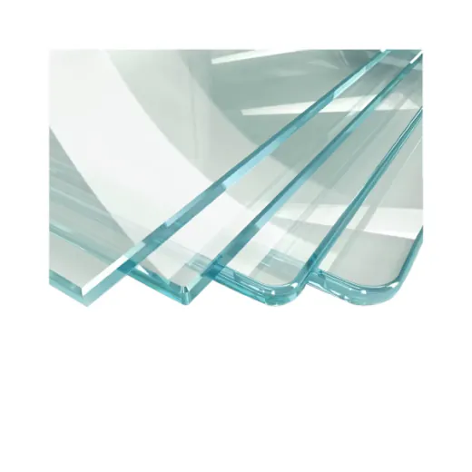
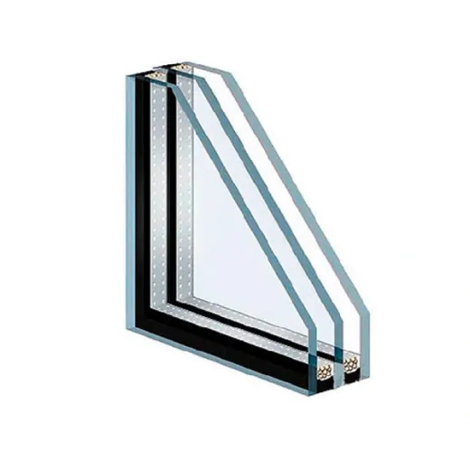
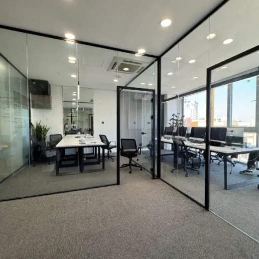
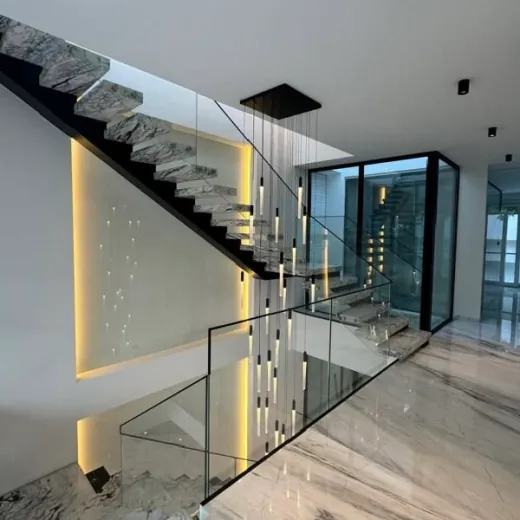
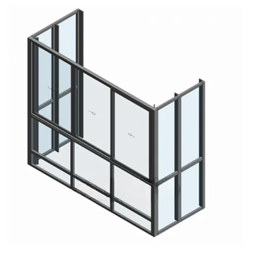
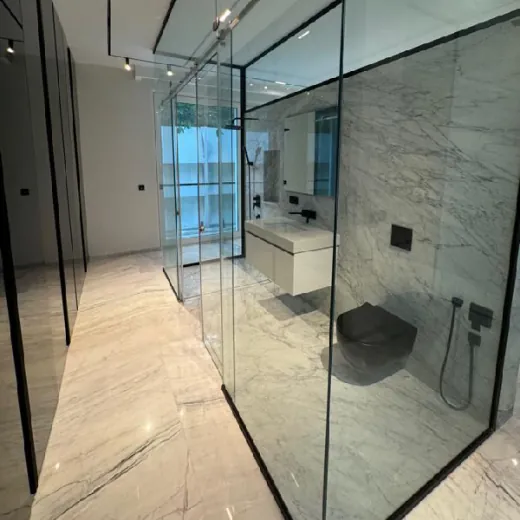
پنجرهٔ آلومینیومی ترمالبریک
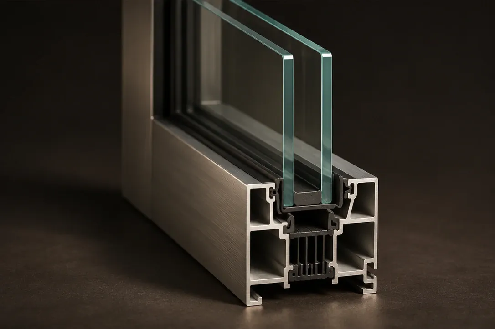
دو جدارهٔ شیشه با فاصله از هم در قاب مینشینند. فضای بستهٔ بین آنها به کاهش انتقال گرما کمک میکند.
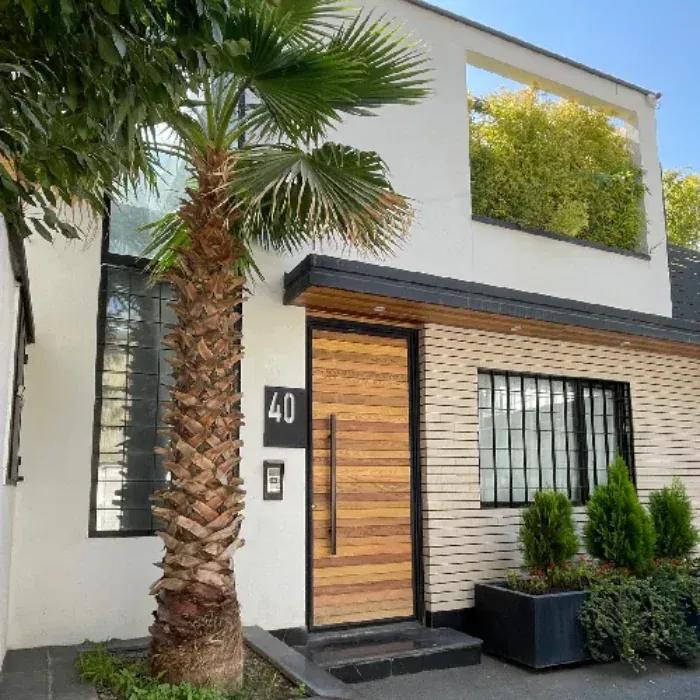
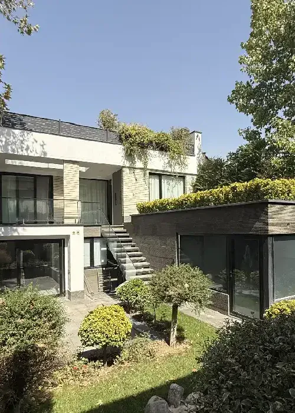
لواسان، خیابان پاسداران · ۱۴۰۲
کنار درِ چوبی، پنجرهای بلند و باریک تا طبقهٔ بالا امتداد دارد. لبهٔ مشکی فریم، مرز شیشه و سنگ روشنِ نما را مشخص میکند.
ویلای لواسان · نمای حیاط
پلکان از کنار پنجرههای قدی میگذرد و به باغچه میرسد. از این زاویه، شیشههای طبقهٔ پایین را میشود همسطح حیاط دید.
بازسازی پنجره
دستگیره را بکشید تا تغییر قاب و وسعت دید را در یک اتاق ببینید.
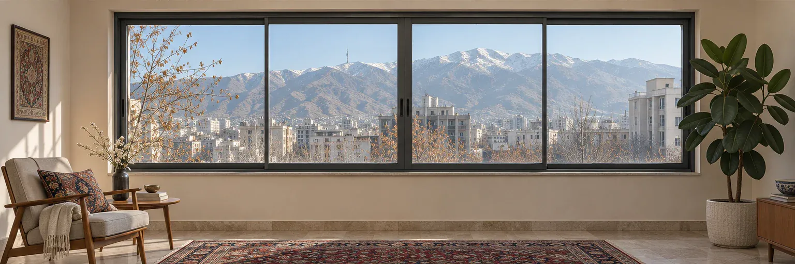
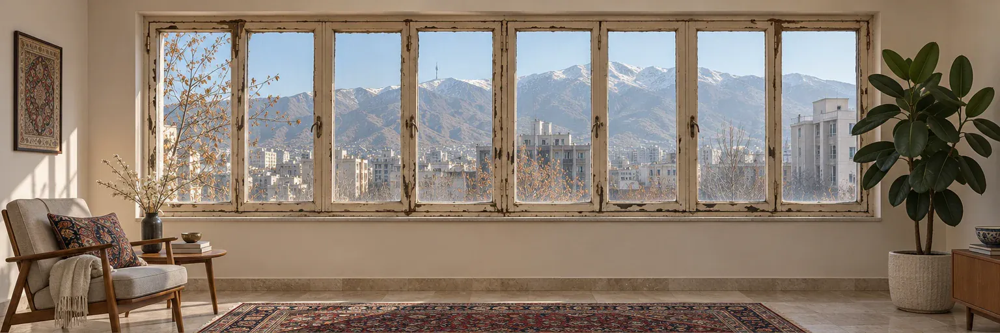